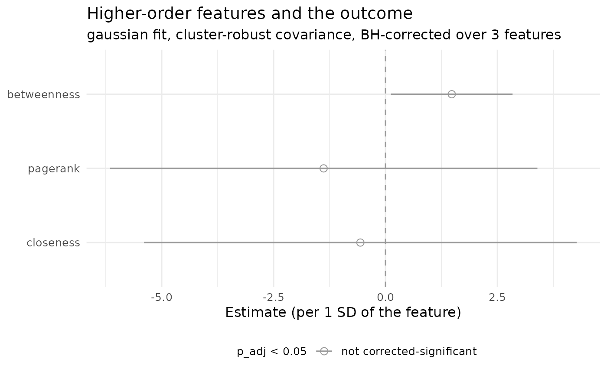

Print method for net_outcome
Usage
# S3 method for class 'net_outcome'
print(x, digits = 3L, ...)Arguments
- x
A
net_outcomefromhon_outcome().- digits
Number of significant digits in the printed table.
- ...
Ignored.
Examples
# 60 actors, each a different mixture of four work motifs; the motifs
# carry the second-order dependence the network will pick up.
set.seed(42)
motifs <- list(c("plan", "code", "test"), c("debug", "code", "debug"),
c("read", "plan", "code"), c("test", "read", "plan"))
actors <- sprintf("s%02d", seq_len(60))
mix <- matrix(stats::runif(60 * 4), nrow = 60)
seqs <- stats::setNames(
lapply(seq_len(60), function(i)
unlist(motifs[sample(4, 10, replace = TRUE, prob = mix[i, ])],
use.names = FALSE)),
actors)
hon <- build_hon(seqs, max_order = 2)
scores <- stats::setNames(60 + 8 * mix[, 1] + stats::rnorm(60, sd = 2),
actors)
fit <- hon_outcome(hon, outcome = scores, sequences = seqs)
fit
#> Higher-order structure -> outcome [gaussian, model-based covariance]
#> 60 actors / 4 terms / features: centrality
#> feature estimate std_error conf_low conf_high statistic p p_adj n
#> (Intercept) 64.600 0.360 63.8000 65.30 180.000 5.28e-79 NA 60
#> pagerank -1.380 1.840 -5.0600 2.30 -0.752 4.55e-01 0.683 60
#> betweenness 1.480 0.709 0.0588 2.90 2.090 4.15e-02 0.125 60
#> closeness -0.562 1.850 -4.2600 3.14 -0.304 7.62e-01 0.762 60
#>
#> p_adj: BH across 3 features
as.data.frame(fit, sort_by = "p_adj")
#> feature estimate std_error conf_low conf_high statistic p
#> 1 betweenness 1.479653 0.7092566 0.05884117 2.900465 2.0862025 0.04152706
#> 2 pagerank -1.382241 1.8378594 -5.06391571 2.299434 -0.7520928 0.45514490
#> 3 closeness -0.561793 1.8465105 -4.26079793 3.137212 -0.3042458 0.76206839
#> p_adj n
#> 1 0.1245812 60
#> 2 0.6827173 60
#> 3 0.7620684 60
# \donttest{
# actors nested in classes: cluster-robust standard errors
classes <- stats::setNames(rep(sprintf("c%02d", seq_len(20)), each = 3),
actors)
nested <- hon_outcome(hon, outcome = scores, sequences = seqs,
nested_in = classes)
summary(nested)
#> Higher-order outcome model
#> family : gaussian (link: identity)
#> actors in the fit : 60 (0 dropped)
#> features : centrality [pagerank, betweenness, closeness]
#> predictors : z-scored (estimate = change per 1 SD)
#> covariance : cluster-robust (CR3) over 20 clusters
#> small-sample factor : CR3: cluster jackknife, (I - H_gg)^-1 per cluster
#> intervals : 95%, t(19)
#> multiplicity : BH across 3 features
#> scaled condition : 11.8
#> R-squared : 0.1217 (adjusted 0.0746)
#> residual SD : 2.7857
#>
#> feature estimate std_error conf_low conf_high statistic p
#> pagerank -1.382241 2.2815480 -6.1575757 3.393094 -0.6058346 0.55179401
#> betweenness 1.479653 0.6490562 0.1211627 2.838143 2.2796992 0.03435012
#> closeness -0.561793 2.3094454 -5.3955178 4.271932 -0.2432588 0.81041190
#> p_adj n
#> 0.8104119 60
#> 0.1030504 60
#> 0.8104119 60
#>
#> The network is treated as fixed: these intervals condition on the
#> estimated higher-order structure and do not propagate its uncertainty.
plot(nested)

# }